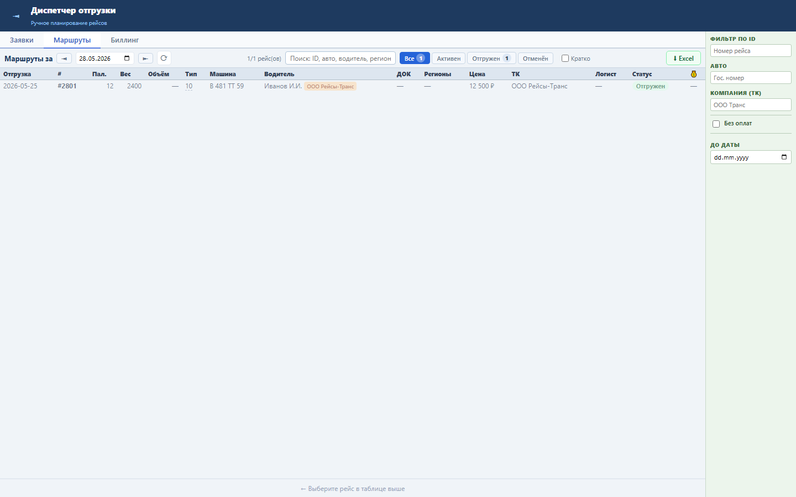

Блок выгружает текущий список рейсов в XLSX с теми же фильтрами, что применены на вкладке «Маршруты».
Экспорт использует GET /tasks/export.xlsx и поля рейса: дата, ID, паллеты, вес, тип ТС, машина, водитель, цена, ТК и статус.
Диспетчер получает файл рейсов для оперативной сверки, планёрки или передачи смежным подразделениям.

Проверка: functional, UI smoke и load gates пройдены.